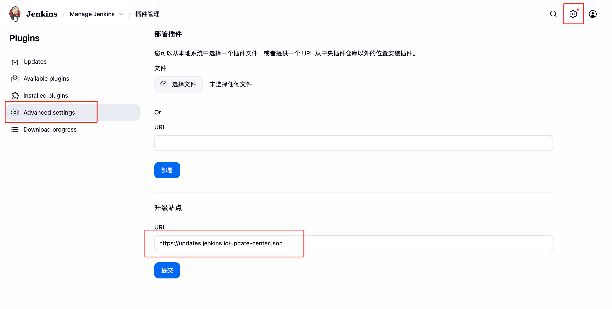

Docker的安装与使用
Docker 容器技术的特点
文件系统隔离：每个进程容器运行在完全独立的根文件系统里。
资源隔离：可以使用 cgroup 为每个进程容器分配不同的系统资源，例如 CPU 和内存。
网络隔离：每个进程容器运行在自己的网络命名空间里，拥有自己的虚拟接口和 IP 地址。
写时复制：采用写时复制方式创建根文件系统，这让部署变得极其快捷，并且节省内存和硬盘空间。
日志记录：Docker 将会收集和记录每个进程容器的标准流（stdout/stderr/stdin），用于实时检索或批量检索。
变更管理：容器文件系统的变更可以提交到新的映像中，并可重复使用以创建更多的容器。无需使用模板或手动配置。
交互式 Shell：Docker 可以分配一个虚拟终端并关联到任何容器的标准输入上，例如运行一个一次性交互 shell。
Docker 几乎可以安装（更准确地说是运行）任何服务，包括：
MySQL（数据库）
MongoDB（NoSQL 数据库）
Node.js（应用运行环境）
Nginx（反向代理 / 静态资源服务器）
这些服务都是 Docker 的“经典组合”，在实际项目部署中非常常见。
Docker 的安装与使用
docker 服务可以通过宝塔面板安装
安装 MongoDB
docker run -d \
--name mongo \
-v /data/mongo:/data/db \
-p 27017:27017 \
mongo:latest安装 MySQL
docker run -d \
--name mysql \
-v /data/mysql:/var/lib/mysql \
-e MYSQL_ROOT_PASSWORD=123456 \
-p 3306:3306 \
mysql:8.0安装 Nginx
docker run -d \
--name nginx \
-v /data/nginx/html:/usr/share/nginx/html \
-v /data/nginx/conf:/etc/nginx/conf.d \
-p 80:80 \
nginx:latest安装 Node.js 应用
docker run -d \
--name nodeapp \
-v /data/nodeapp:/app \
-w /app \
-p 3000:3000 \
node:18 \
node index.js
Docker 的优势
| 功能 | 传统安装（宝塔） | Docker 安装 |
|---|---|---|
| 环境一致性 | ❌ 容易出错（版本差异） | ✅ 一致，可复制 |
| 安装速度 | 慢 | ⚡ 快（几秒启动） |
| 升级维护 | ⚠️ 易冲突 | ✅ 可随时换版本 |
| 数据备份迁移 | 手动复制 | 直接拷贝挂载目录 |
| 多版本共存 | 几乎不可能 | ✅ 完全隔离 |
| 系统污染 | 安装包多 | ✅ 不污染系统环境 |
Docker 常用命令
查看所有容器运行状态
|
查看某个容器的运行状态
|
查看日志
|
停止单个服务
|
停止所有服务
|
启动所有服务
|
启动单个服务
|
重启单个服务
|
Docker 通常怎么用，部署服务器环境省事又省心
在生产部署中，通常这样安装环境：
Mongo + MySQL 都用 Docker 启动，挂载数据卷；
Node 项目打包成 Docker 镜像；
Nginx 作为反向代理放在最前端；
所有容器用 Docker Compose 一键管理启动。
例如一个典型的 docker-compose.yml：
|
创建宿主机容器目录
|
👉 然后只需执行：
|
注意：compose 是新版命令，如果你是旧版 docker，请用 docker-compose up -d
就能一键启动 Mongo、MySQL、Node、Nginx 四个环境。
验证运行情况：
|
进入交互式终端的命令：
|
登录 MySQL 测试：
|
登录 redis 测试：
|
登录 MongoDB 测试：
|
📁 推荐目录结构
/www/
├── docker-compose.yml
├── wwwroot/
│ └── zzf.net.cn/
│ ├── server/ # Node.js 后端项目
│ ├── web/ # 前端打包文件
│ └── nginx_conf/ # Nginx 配置文件
├── mongo_data/ # Mongo 数据持久化
└── mysql_data/ # MySQL 数据持久化
Docker 安装 jenkins 的详细步骤
参考上面配置好的 docker-compose.yml 文件
创建宿主机容器目录
mkdir -p /var/lib/jenkins
chmod -R 777 /var/lib/jenkins启动 jenkins 容器
docker compose up -d jenkins
如果容器已经存在，先停止容器，然后再删除容易
docker stop jenkins && docker rm jenkins查看初始密码
docker logs -f jenkins在云服务平台安全组放行 jenkins 端口
用 ip+端口访问 jenkins 服务
选择默认插件安装，创建用户
如果不能科学上网，可以设置国内加速源下载插件

安装以下插件
GitHub Integration
Generic Webhook Trigger
下面这些插件会在初始化中默认安装
Git
GitHub Branch Source
Pipeline: GitHub Groovy Libraries
Credentials Binding
GitHub API如何备份 jenkinns 数据，先进入 tmp 目录
cd /tmp
docker ps | grep jenkins
找到运行的ID
docker cp 15fe80dc5a43:/var/jenkins_home /tmp/
复制完成后，可以移动到其他目录，因为tmp目录的内容在云服务器重启后会清空如何配置权限，安装以下插件
pam
role
默认已经安装过的
Matrix Authorization Strategy
LDAP以下可选插件
slaves
Dashboard View
ThinBackup
AnsiColor
Build With Parameters配置
（1）在 GitHub 上生成 Personal Access Token（PAT）打开 GitHub → Settings → Developer settings → Personal access tokens → Tokens (classic) → Generate new token → Generate new token (classic)
选择仓库读写权限（repo、admin:repo_hook、read:org）
复制 Token（2）在 Jenkins 中添加凭据
打开 Manage Jenkins → Credentials → System → Global credentials
添加：
类型：Secret Text
ID：github-token
Secret：粘贴 Token（3）在 Jenkins 中配置 GitHub Server
Manage Jenkins → System → GitHub
添加 GitHub Server，选择上面添加的凭据
点击 “Test Connection” 确认连接成功，若成功，会显示 GitHub 用户名（4）在 GitHub 上配置 Webhook
填入 Jenkins 的 webhook 地址：
http://<你的Jenkins服务器>:8080/github-webhook/
Content type 选：application/json
事件：Just the push event（5）在 jenkins 创建一个项目任务，选择自由风格项目
（6）在 General 中勾选参数化构建过程，添加几对字符参数，下面 shell 脚本中在创建 web_pc 镜像过程中会用到，分别是
名称：container_name
默认值：web_pc
名称：port
默认值：11006
名称：image_name
默认值：web_pc
名称：tag
默认值：1.0（7）配置源码管理，选择 Git，在 Repository URL 填入你的 GitHub 仓库地址，例如：https://github.com/yourname/yourrepo.git
（8）在 Credentials（凭证） 下拉框中，选择你刚才配置的 GitHub Token（github-token），如果仓库是私有的，必须选择凭证
（9）在 Branches to build 中，确保分支是：*/main
（10）配置构建触发器（Build Triggers），勾选 GitHub hook trigger for GITScm polling，前提是 GitHub 仓库中配置了 Webhook
（11）配置构建步骤（Build Steps），选择 shell，然后输入以下命令
#!/bin/bash
CONTAINER=${container_name}
PORT=${port}
# echo $CONTAINER
# echo $PORT
# 完成镜像的构建
# docker built -t web_pc:1.0 .
# 后面的.代表使用工程目录下面的Docker file文件
docker build --no-cache -t ${image_name}:${tag} .
RUNNING=${docker inspect --format="{{ .State.Running}}" $CONTAINER 2 > /dev/null}
# 条件判断
if [ ! -n $RUNNING ]; then
echo "$CONTAINER does not exit"
return 1
fi
if [ $RUNNING == "false" ]; then
echo "$CONTAINER is not running"
return 2
else
echo "$CONTAINER is running"
# 删除相同名字的容器
matchingStarted=$(docker ps --filter="name=$CONTAINER" -q | xargs)
if [ -n $matchingStarted ]; then
docker stop $matchingStarted
fi
matching=$(docker ps -a --filter="name=$CONTAINER" -q | xargs)
if [ -n $matching ]; then
docker rm $matching
fi
fi
echo "RUNNING is ${RUNNING}"
# 运行镜像
docker run -itd --name $CONTAINER -p $PORT:80 ${image_name}:${tag}
# echo "开始构建 Vue 项目"